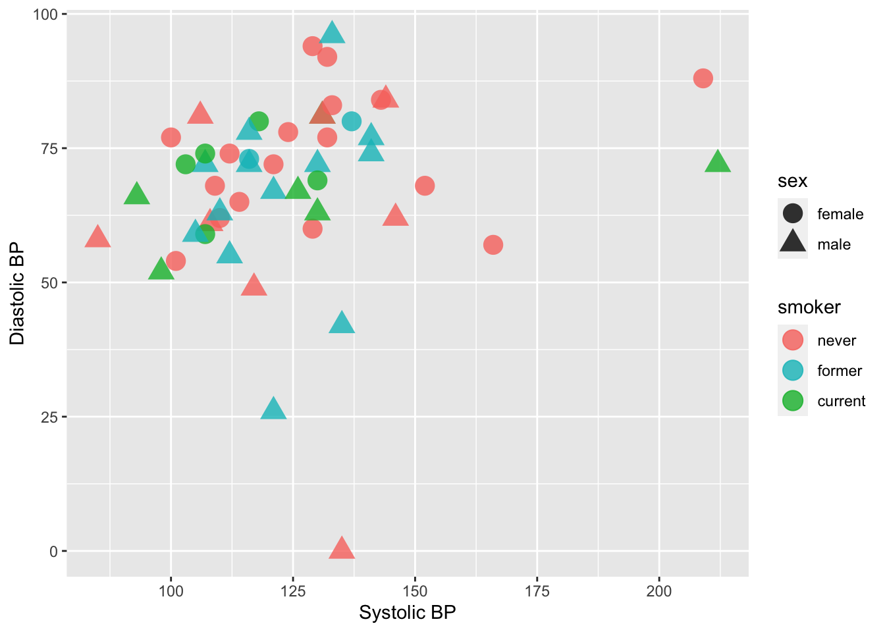

Topic 2 Categorical Variables as Factors
Learning Goals
- Understand the difference between a variable stored as a
charactervs. afactor - Be able to convert a
charactervariable to afactor - Develop comfort in manipulating the order and values of a factor with the
forcatspackage to improve summaries and visualizations.
You can download a template .Rmd of this activity here.
Example: Grade Distribution
Grades <- read_csv("https://bcheggeseth.github.io/112_fall_2022/data/grades.csv")
Grades <- Grades %>%
select(sid, sessionID, grade) %>%
distinct(sid, sessionID, .keep_all = TRUE)We will continue with the grades data from the previous activity. Here is a sample to remember what it looks like:
| sid | sessionID | grade |
|---|---|---|
| S31842 | session2207 | B+ |
| S32436 | session3172 | S |
| S31671 | session3435 | A- |
| S31929 | session3512 | NC |
Here is a bar chart of the grade distribution:
ggplot(Grades, aes(x = grade)) +
geom_bar()
We can also wrangle a table that just has each grade and the number of times it appears:
GradeDistribution <- Grades %>%
group_by(grade) %>%
summarize(count = n())# Alternatively, we can use the count() function the creates a variable called n
Grades %>%
count(grade) | grade | count |
|---|---|
| A | 1506 |
| A- | 1381 |
| AU | 27 |
| B | 804 |
| B- | 330 |
| B+ | 1003 |
| C | 137 |
| C- | 52 |
| C+ | 167 |
| D | 18 |
| D- | 6 |
| D+ | 8 |
| NC | 17 |
| S | 388 |
What could be improved about this graphic and table?
The grades are listed alphabetically, which isn’t particularly meaningful. Why are they listed that way? Because the variable grade is a character string type:
class(Grades$grade)## [1] "character"When dealing with categorical variables that take a finite number of values (levels, formally), it is often useful to store the variable as a factor, and specify a meaningful order for the levels.
For example, when the entries are stored as character strings, we cannot use the levels command to see the full list of values:
levels(Grades$grade)## NULLConverting to factor
Let’s first convert the grade variable to a factor:
Grades <- Grades %>%
mutate(grade = factor(grade))Now we can see the levels:
levels(Grades$grade)## [1] "A" "A-" "AU" "B" "B-" "B+" "C" "C-" "C+"
## [10] "D" "D-" "D+" "NC" "S"Moreover, the forcats package (part of tidyverse) allows us to manipulate these factors. Its commands include the following.
Changing the order of levels
fct_relevel(): manually reorder levels
fct_infreq(): order levels from highest to lowest frequency
fct_reorder(): reorder levels by values of another variable
fct_rev(): reverse the current order
Changing the value of levels
fct_recode(): manually change levels
fct_lump(): group together least common levels
More details on these and other commands can be found on the forcats cheat sheet or in Wickham & Grolemund’s chapter on factors.
Example 2.1 (Reorder factors) Let’s reorder the grades so that they are in a more meaningful order for the bar chart above. Here are three options:
Option 1: From high grade to low grade, with “S” and “AU” at the end:
Grades %>%
mutate(grade = fct_relevel(grade, c("A", "A-", "B+", "B", "B-", "C+", "C", "C-", "D+", "D", "D-", "NC", "S", "AU"))) %>%
ggplot(aes(x = grade)) +
geom_bar()
Option 2: In terms of ascending frequency:
ggplot(GradeDistribution) +
geom_col(aes(x = fct_reorder(grade, count), y = count)) +
labs(x = "grade")
Option 3: In terms of descending frequency:
ggplot(GradeDistribution) +
geom_col(aes(x = fct_reorder(grade, count, .desc = TRUE), y = count)) +
labs(x = "grade")
Example 2.2 (Recode factors) Because it may not be clear what “AU” and “S” stand for, let’s rename them to “Audit” and “Satisfactory”.
Grades %>%
mutate(grade = fct_relevel(grade, c("A", "A-", "B+", "B", "B-", "C+", "C", "C-", "D+", "D", "D-", "NC", "S", "AU"))) %>%
mutate(grade = fct_recode(grade, "Satisfactory" = "S", "Audit" = "AU")) %>%
ggplot(aes(x = grade)) +
geom_bar()
Exercise 2.1 Now that you’ve developed your data visualization and wrangling skills,
- develop a research question to address with the grades and courses data,
- create a high quality visualization that addresses your research question,
- write a brief description of the visualization and include the insight you gain about the research question.
Courses <- read_csv("https://bcheggeseth.github.io/112_fall_2022/data/courses.csv")